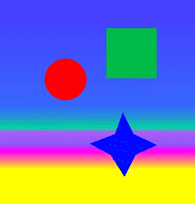

Expression Web allows the web designer to easily add formatting changes to an image. Just be careful that you don't accidently overwrite your original image. Some of the simple formatting available using the Pictures toolbar are rotating, flipping, changing brightness or contrast, adding a transparent color, or washing out a color.
Select a shape in the image below to visit its page.
